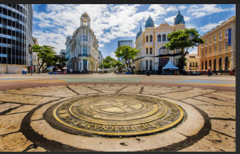

O Marco Zero, fica localizado na praça Rio Branco é conhecido como o local de fundação da cidade do Recife.
É um ponto de grande importância para a cidade, dividido em o Marco Antigo e o Marco novo.
A Praça do Marco zero, representa muito mais que um epicentro cultural, mais também o início da história da capital Pernambucana.
